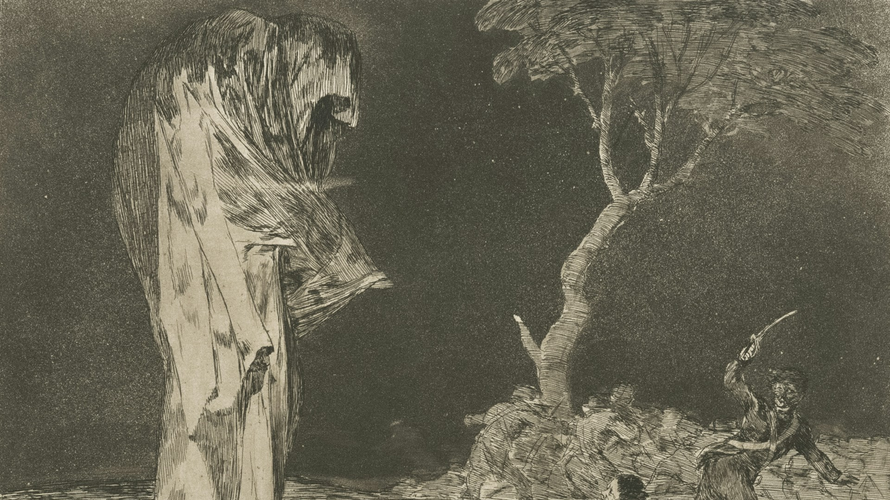

各種正規職員Regulärer Angestellter
大魔王城事務職員
大魔王城における公務/事務作業を担当します。
直轄軍/親衛隊/保安本部と大魔王城間の折衝や各種行政手続き、文書整理や会議の運営などを行います。
直轄軍軍人/親衛隊員
正規軍人として、魔界/大魔王領の防衛や警備/戦闘を担当します。直轄軍は大魔王の直属の部隊であり、親衛隊は大魔王様の身近な護衛を務めます。
魔界保安本部員
魔界の治安維持や犯罪捜査、大魔王領の安全確保を担当します。大魔王軍の治安管理部門として、魔界の秩序を守るための活動を行います。
後宮勤務者
大魔王様の生活を支えるために、後宮内での各種業務を担当します。食事準備、清掃、衣装管理など、大魔王様の生活に必要な"サポート"を行います。
各種非正規職員nicht regulärer Mitarbeiter
門衛/警衛
大魔王城の門や警備を担当します。門衛は城の出入りを管理し、警衛は城内での安全確保を担います。
公共工事契約工員
大魔王軍が行う公共工事に従事する労働者です。道路整備や建物の建設・維持管理など、魔界/大魔王領のインフラを支える役割を果たします。
予備(待機)軍役
大魔王軍の予備軍として、戦闘不能になった正規軍人を補充する役割を担います。大魔王領の防衛や警備に従事し、必要に応じて戦場に投入されます。普段のお仕事と並行して、一定期間の訓練期間を定期的に設けることにより、本来の生活との両立を図った制度です。
各部リンク


